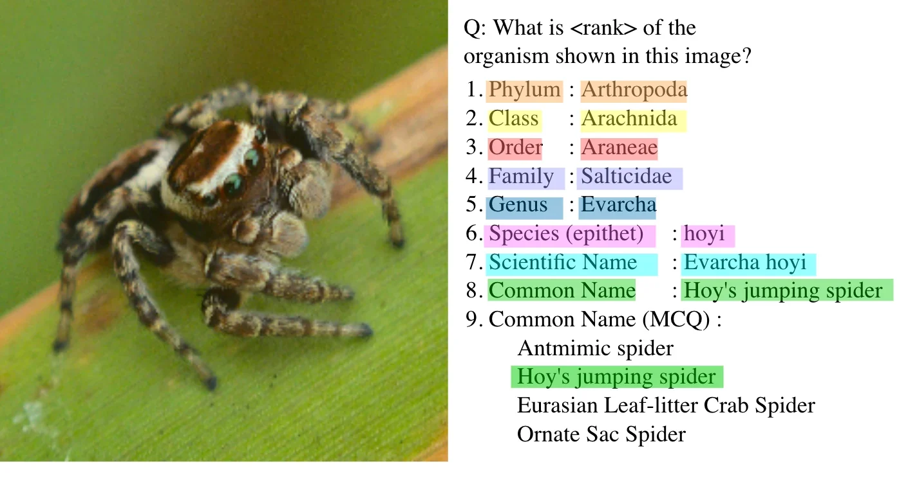
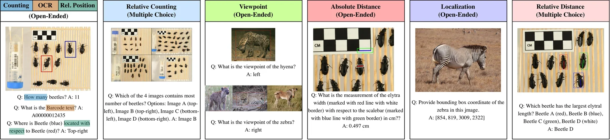
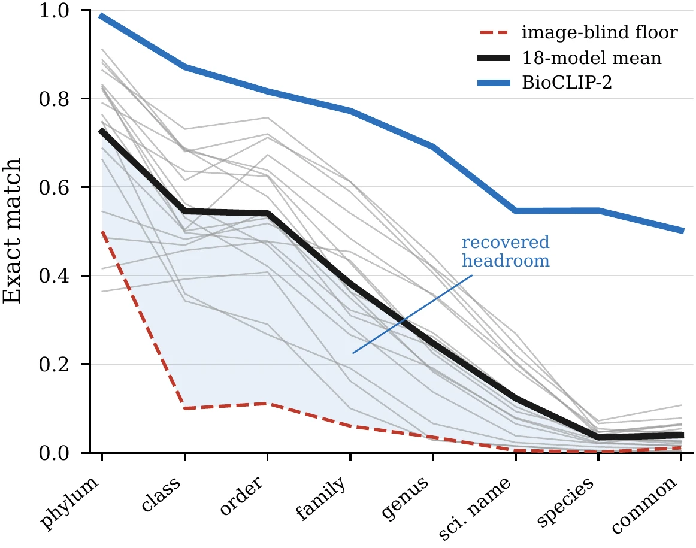
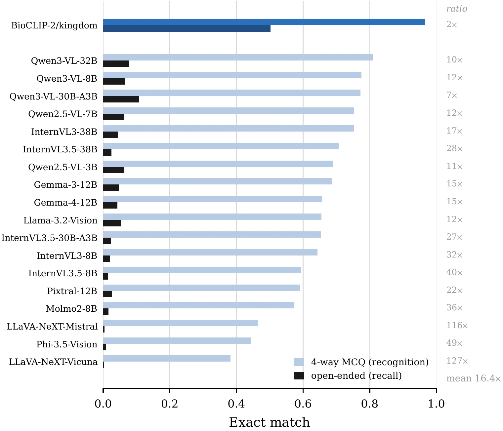
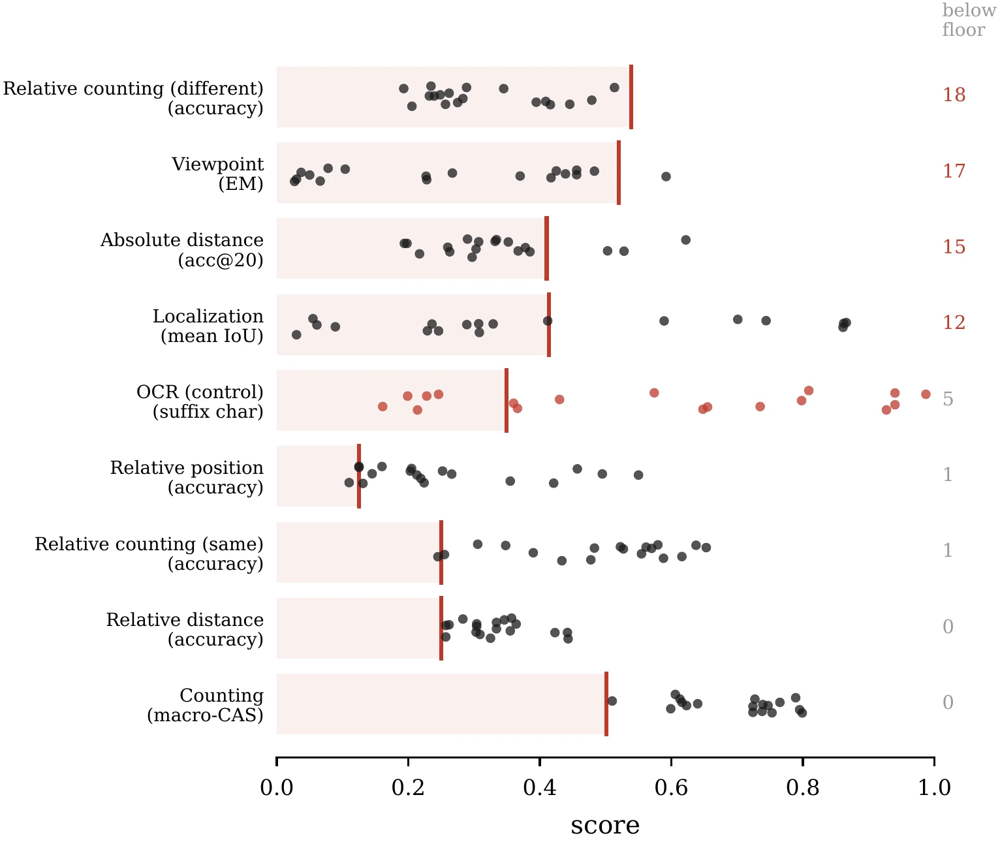
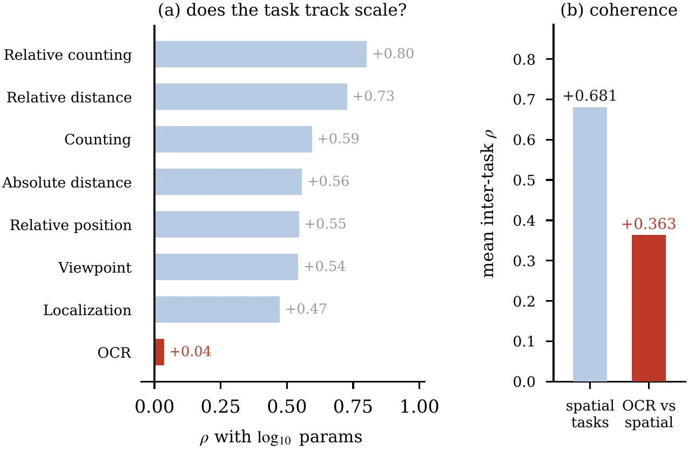
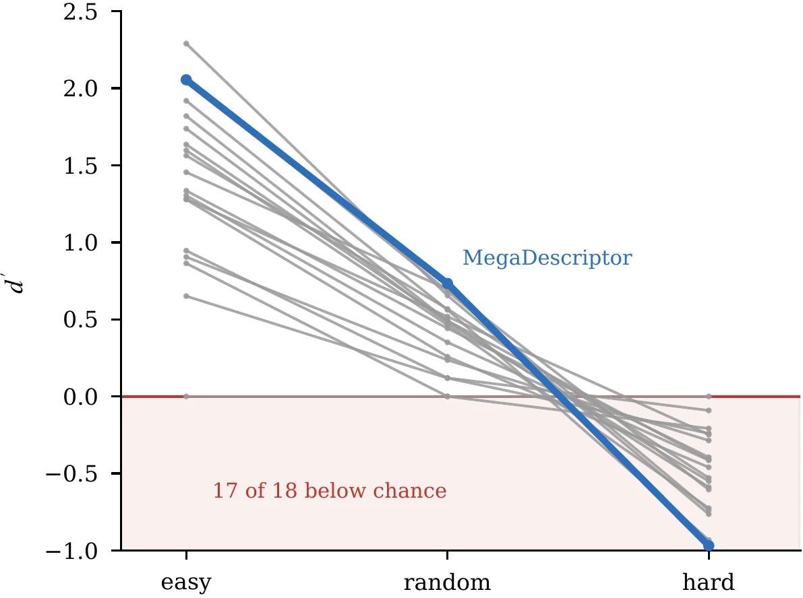
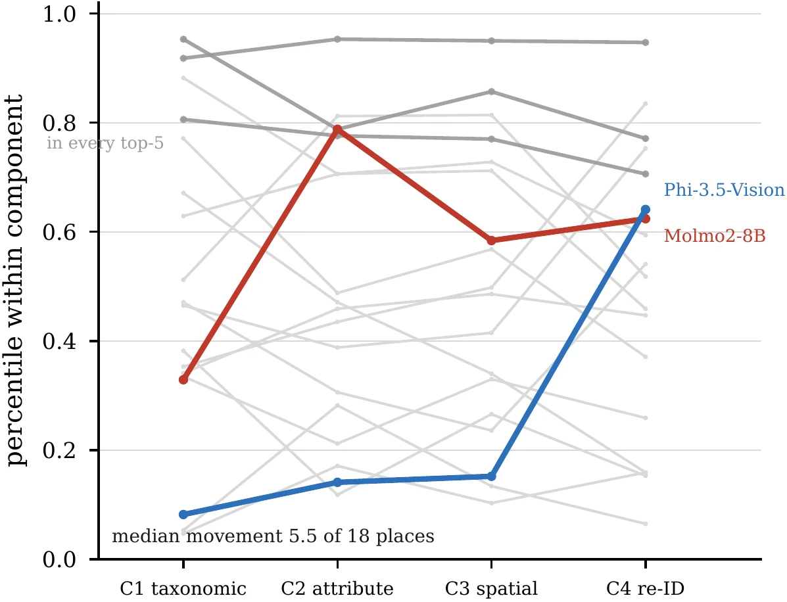

General visual skills do not transfer to biology: VLMs that count everyday objects well count animals exactly on 41.7% of images, and most cannot measure a specimen better than a constant guess.
One biological image raises several questions at once: which taxon, how many, which trait, and whether this individual has been seen before. Today each is answered by a separate specialist model or by an expert. Vision-language models could answer all of them from the image, but beyond species identification their abilities in biology are largely untested.
Bio-VQA is the largest biological VQA benchmark and the only one that spans four complementary abilities. Answers are scored on a graded scale, so a near-miss counts for more than a distant answer, and every task has an image-blind floor and, where one exists, a domain specialist as reference.
How Bio-VQA compares
| Benchmark | QA | Images | Groups | Tax | Att | Spa | Ind | |
|---|---|---|---|---|---|---|---|---|
| General | MMBench | 3.0K | 3.0K | – | – | ○ | ○ | – |
| General | BLINK | 3.8K | 7.4K | – | – | ○ | ● | – |
| General | CV-Bench | 2.6K | 2.6K | – | – | ○ | ● | – |
| General | AVA-Bench | 218K | 218K | – | – | ● | ● | – |
| Biology | J-EDI QA | 0.1K | 0.1K | 1 | ● | – | – | – |
| Biology | PlantExpertVQA | 765K | 151K | 1 | ○ | ● | – | – |
| Biology | VLM4Bio | 469K | 30K | 3 | ● | ● | – | – |
| Bio-VQA | 1.86M | 217K | 10 | ● | ● | ● | ● |
● primary task family, ○ appears incidentally, – absent. Tax: taxonomic, Att: attribute, Spa: spatial, Ind: individual identity.
What is inside
| Component | Tasks | Sources | Images | Questions | Data | |
|---|---|---|---|---|---|---|
| C1 | Hierarchical taxonomic reasoning | 9 | 1 | 100,000 | 890,000 | TreeOfLife-200M |
| C2 | Fine-grained attribute grounding | 4 | 1 | 23,576 | 824,104 | CUB-200-2011 |
| C3 | Quantitative spatial reasoning | 8 | 8 | 78,139 | 132,504 | WAID, Bees, 2018-NEON-Beetles, DePondFi, GZCD and others |
| C4 | Individual re-identification | 3 | 5 | 15,000 | 15,000 | WhaleSharkID, BelugaID, HyenaID, LeopardID, GZCD |
| Total | 24 | 11 | 216,715 | 1,861,608 |
Four datasets feed both C3 and C4, so the benchmark draws on 11 public datasets in total.
Four components



The fourth component, individual re-identification, asks whether two images show the same animal across five species, under easy, random and adversarial pairings, and scores answers with signal detection theory (d′ and criterion c) so that always answering yes cannot win.
Results: 18 models on 24 tasks
Shaded cells mark the best, second best, second worst and worst model in each column. Floor is what an image-blind rule scores. BioCLIP-2 (taxonomy) and MegaDescriptor (re-identification, Grevy's zebra only) are domain specialists. Scroll sideways to see all columns.
| # | Model | C1 Taxonomy (exact match) | C2 Attributes (CAGS) | C3 Spatial | C4 Re-ID | ||||||||||||||||||
|---|---|---|---|---|---|---|---|---|---|---|---|---|---|---|---|---|---|---|---|---|---|---|---|
| phylum | class | order | family | genus | species | sci. name | common | salience | morphology | localization | naming | count | rel. count | abs. dist. | rel. dist. | localize | rel. pos. | viewpoint | OCR | d′ | acc | ||
| BioCLIP-2 (tol)* | .925 | .874 | .821 | .775 | .691 | .545 | .544 | .500 | – | – | – | – | – | – | – | – | – | – | – | – | – | – | |
| MegaDescriptor** | – | – | – | – | – | – | – | – | – | – | – | – | – | – | – | – | – | – | – | – | .733 | .683 | |
| 1 | Qwen3-VL-32B | .831 | .615 | .712 | .612 | .444 | .066 | .244 | .078 | .584 | .644 | .475 | .731 | .789 | .555 | .622 | .443 | .866 | .550 | .427 | .900 | .696 | .636 |
| 2 | Qwen3-VL-30B-A3B | .864 | .731 | .757 | .612 | .417 | .072 | .221 | .107 | .558 | .631 | .453 | .658 | .795 | .483 | .528 | .423 | .861 | .355 | .391 | .979 | .518 | .602 |
| 3 | InternVL3-38B | .911 | .683 | .638 | .484 | .355 | .054 | .189 | .044 | .562 | .645 | .413 | .669 | .799 | .567 | .367 | .363 | .744 | .205 | .373 | .105 | .463 | .581 |
| 4 | Gemma-4-12B | .880 | .686 | .578 | .363 | .183 | .021 | .065 | .043 | .592 | .621 | .431 | .374 | .753 | .563 | .385 | .443 | .589 | .495 | .331 | .345 | .351 | .567 |
| 5 | Qwen3-VL-8B | .887 | .680 | .720 | .589 | .406 | .046 | .202 | .065 | .531 | .624 | .441 | .643 | .739 | .414 | .303 | .345 | .862 | .421 | .373 | .711 | .492 | .572 |
| 6 | InternVL3.5-38B | .746 | .636 | .624 | .363 | .271 | .038 | .128 | .025 | .559 | .638 | .375 | .536 | .765 | .504 | .503 | .360 | .412 | .219 | .340 | .192 | .258 | .542 |
| 7 | Molmo2-8B | .823 | .563 | .469 | .286 | .137 | .021 | .038 | .016 | .503 | .643 | .474 | .330 | .623 | .416 | .290 | .358 | .055 | .457 | .483 | .692 | .491 | .578 |
| 8 | Qwen2.5-VL-7B | .763 | .504 | .673 | .541 | .420 | .047 | .269 | .062 | .541 | .580 | .356 | .713 | .724 | .410 | .334 | .337 | .308 | .213 | .395 | .916 | .442 | .541 |
| 9 | InternVL3.5-30B-A3B | .486 | .469 | .545 | .310 | .240 | .034 | .118 | .024 | .537 | .609 | .350 | .539 | .727 | .489 | .378 | .333 | .289 | .252 | .309 | .188 | .568 | .612 |
| 10 | InternVL3-8B | .827 | .497 | .478 | .322 | .262 | .032 | .124 | .020 | .508 | .584 | .346 | .581 | .738 | .320 | .297 | .304 | .246 | .203 | .335 | .314 | .684 | .601 |
| 11 | InternVL3.5-8B | .819 | .531 | .421 | .266 | .191 | .023 | .077 | .015 | .495 | .603 | .372 | .457 | .747 | .408 | .263 | .299 | .236 | .224 | .264 | .460 | .236 | .544 |
| 12 | Gemma-3-12B | .790 | .688 | .626 | .429 | .225 | .048 | .093 | .047 | .466 | .551 | .410 | .511 | .606 | .415 | .352 | .280 | .329 | .145 | .235 | .352 | .120 | .505 |
| 13 | Qwen2.5-VL-3B | .416 | .457 | .477 | .454 | .358 | .040 | .206 | .064 | .427 | .500 | .389 | .661 | .640 | .321 | .194 | .300 | .307 | .110 | .230 | .904 | .655 | .559 |
| 14 | Pixtral-12B | .688 | .501 | .530 | .349 | .187 | .029 | .079 | .027 | .447 | .495 | .320 | .465 | .599 | .352 | .307 | .304 | .229 | .266 | .246 | .065 | .119 | .519 |
| 15 | LLaVA-NeXT-Vicuna | .662 | .343 | .290 | .100 | .028 | .003 | .015 | .003 | .457 | .454 | .364 | .198 | .510 | .250 | .217 | .250 | .701 | .125 | .187 | .000 | .000 | .500 |
| 16 | Phi-3.5-Vision | .748 | .359 | .267 | .191 | .066 | .013 | .023 | .009 | .454 | .533 | .154 | .217 | .613 | .316 | .198 | .256 | .030 | .160 | .221 | .044 | .562 | .576 |
| 17 | Llama-3.2-Vision | .545 | .482 | .518 | .434 | .234 | .031 | .104 | .054 | .317 | .483 | .286 | .520 | .724 | .286 | .260 | .317 | .061 | .125 | .250 | .722 | .000 | .500 |
| 18 | LLaVA-NeXT-Mistral | .364 | .392 | .408 | .162 | .029 | .005 | .015 | .004 | .372 | .484 | .259 | .238 | .616 | .259 | .332 | .250 | .089 | .131 | .173 | .000 | .476 | .508 |
| Mean | .725 | .545 | .541 | .382 | .247 | .035 | .123 | .039 | .495 | .574 | .370 | .502 | .695 | .407 | .341 | .331 | .401 | .259 | .309 | .438 | .396 | .558 | |
| Floor | .500 | .100 | .111 | .060 | .035 | .005 | .001 | .011 | .000 | .000 | .000 | .000 | .501 | .250 | .410 | .250 | .415 | .250 | .170 | .000 | .000 | .500 | |
What the results show
C1: VLMs fail at finer ranks
Exact match falls from .725 at phylum to .123 at scientific name over the same images. The best model reaches .731 at class against BioCLIP-2's .874, but .269 at scientific name against .544, so the specialist's lead grows from 1.2x to 2x. From 8B to 38B, InternVL3 gains 18.7 points at class but only 6.5 at scientific name.
Models recognize what they cannot recall
On open-ended common-name questions, models average .039. Given the same images with four options, they average .645, sixteen times higher. The knowledge is in the model; it cannot retrieve it unprompted.
C2: VLMs see traits but cannot localize
Models do best on morphological attributes (.574) and worst on anatomical localization (.370). When a model names the correct part, 17 of 18 still choose its side at or below chance, and mirror confusion rises with model strength (ρ = .75). Molmo2-8B, trained with pointing supervision, is the one exception.
C3: VLMs see objects but not their geometry
Count agreement averages .695, yet exact counts never exceed .242. On trait size, 15 of 18 models fall below a rule that answers one fixed length; they recall a size instead of reading the scale bar. Relative position stays at chance, while OCR, the negative control, correlates with none of the spatial tasks.
C4: VLMs answer from resemblance
MegaDescriptor reaches d′ .733 on Grevy's zebra against a VLM mean of .391. When the two most similar-looking animals are different individuals, 17 of 18 models fall below chance, from −.932 to −.091, and models answer "yes" more often as pairs get harder.
A strong model is strong everywhere
One factor explains 62.2% of the variance across tasks, and InternVL3-38B, Qwen3-VL-30B and Qwen3-VL-32B place top five in every component. Below them the ranking reshuffles: the median model moves 5.5 of 18 places between components.
Results in figures






Do the components measure different things?
| Spearman ρ | C1 | C2 | C3 | C4 |
|---|---|---|---|---|
| C1 taxonomy | – | .689 | .787 | .433† |
| C2 attributes | – | .927 | .514† | |
| C3 spatial | – | .610 | ||
| C4 re-ID | – |
Correlation between component scores over the 18 models. † not significant after Holm correction.
Implications
Re-identification stands apart: knowing how well a model names an organism says nothing about whether it can tell two individuals apart. Attribute grounding and spatial reasoning correlate at .927, so they measure one underlying skill of finding fine-grained detail, though they diagnose different failures.
Multiple choice says little about how a model answers on its own (.645 with four options, .039 without). Without an image-blind floor, a score cannot show whether the model looked at the image: on two tasks a fixed rule beats most models. Where a specialist exists, it stays ahead of most VLMs.
Evaluation setup
| Models | 18 open-weight VLMs from 3.75B to 38.4B parameters: Qwen3-VL, Qwen2.5-VL, InternVL3 and 3.5, Gemma 3 and 4, Molmo2, Pixtral, LLaVA-NeXT, Llama 3.2 Vision and Phi-3.5-Vision |
|---|---|
| Protocol | Zero-shot, greedy decoding, one prompt format per task |
| Scoring | Exact match per rank for taxonomy, CAGS for attributes, task-specific metrics for spatial reasoning, d′ and accuracy for re-identification |
| Reference points | Image-blind floor for every task; BioCLIP-2 and MegaDescriptor as specialists |
Release
The questions, generators, scorers and every per-item model answer are public, along with Bio-VQA-Lite, a stratified sample of 500 questions per task (12K in total) for low-cost evaluation.
Related work
Identifying and Resolving Pitfalls of Knowledge-Based VQA Benchmarks: Auditing, Repairing, and Augmenting
European Conference on Computer Vision (ECCV 2026)Resolvable Insufficiency: When a Retrieved Page Contains Partial Answer
AAAI 2027 NeuSymBridge Workshop, under reviewFine-Grained Beetle Taxonomy with Vision Models: A Benchmark on Long-Tailed and Domain-Adaptive Classification
ICCV 2025 Workshop on Computer Vision for Ecology (CV4E)
Cite
@inproceedings{rayeed2027biovqa,
title = {How Finely Can Vision-Language Models See Biology? {Bio-VQA}: A Benchmark for Taxonomic, Morphological, Spatial and Individual Reasoning},
author = {Rayeed, S M and Ma, Qian and Stewart, Charles V. and Ma, Yao},
booktitle = {Proceedings of the IEEE/CVF Winter Conference on Applications of Computer Vision (WACV)},
year = {2027}
}